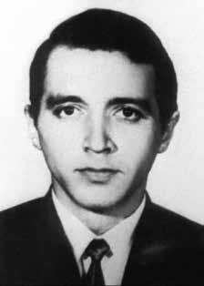

José
Maria
Ferreira
de Araújo
CIRCUNSTÂNCIAS DA MORTE
José Maria Ferreira de Araújo morreu em São Paulo no dia 23 de setembro de 1970, em circunstâncias ainda não esclarecidas. De acordo com a versão apresentada pelos órgãos de repressão, José Maria teria morrido ao reagir à prisão num terminal de ônibus no Anhangabaú, centro da capital paulista. Passados mais de 40 anos da morte de José Ferreira de Araújo, as investigações realizadas pela Comissão de Familiares de Mortos e Desaparecidos Políticos e, mais recentemente, pela Comissão Nacional da Verdade revelaram a existência de indícios que permitem apontar a falsidade da versão divulgada pelos órgãos de repressão. Na véspera da morte de José Maria, agentes do DOI-CODI do II Exército teriam detido Mário de Freitas Gonçalves, militante da VPR, conhecido como Dudu, que informou sobre o encontro com Aribóia, conforme atestam documentos do órgão. Dudu consegue escapar durante o momento de prisão de José Maria e se torna o primeiro caso de desconfiança em relação a infiltrações na VPR. Pesquisas nos arquivos do DOPS/SP encontraram o documento intitulado ―Aos Bispos do Brasil‖, datado de fevereiro de 1973, e assinado pelo Comitê de Solidariedade aos Presos Políticos do Brasil (documento 30-Z-160-12706), em que consta a informação de que Edson Cabral Sardinha (codinome utilizado por José Maria) sofreu espancamentos, choques elétricos, torturas no pau de arara e morreu em decorrência dessas ações. Vários presos políticos do DOI-CODI/II Exército testemunharam o ocorrido. O documento cita como um dos responsáveis por sua morte o capitão Benoni Arruda Albernaz. De acordo com os testemunhos prestados por inúmeros presos políticos, com o fim de compor o documento ―Aos Bispos do Brasil‖, Edson Cabral Sardinha (um dos codinomes utilizado por José Maria Ferreria) foi submetido a brutais sessões de tortura, vindo a falecer em consequência delas. Referindo-se ao mesmo codinome, presos políticos do Presídio do Barro Branco denunciaram a morte de José Maria em carta encaminhada ao então presidente da Ordem dos Advogados do Brasil (OAB), Dr. Caio Mário da Silva Pereira, de 25 de outubro de 1975. A morte de José Maria Ferreira de Araújo também foi denunciada no I Congresso Brasileiro pela Anistia realizado na PUC/SP, em novembro de 1978. Somente em 1990, após a abertura da vala clandestina do cemitério D. Bosco, de Perus, na cidade de São Paulo, o verdadeiro nome de Edson Cabral Sardinha foi identificado e os familiares de José Maria notificados a respeito da correlação entre ele e o codinome. A descoberta ocorreu por meio de pesquisas da Comissão de Familiares de Mortos e Desaparecidos Políticos realizadas nos arquivos do IML/SP com a ajuda do ex-preso político Ariston Oliveira Lucena (falecido em maio de 2013), que identificaram o verdadeiro nome de Edson Cabral Sardinha através de uma foto encontrada por Maria Amélia Almeida Teles. Desta forma, restou comprovado que José Maria Ferreira de Araújo foi enterrado com o nome falso de Edson Cabral Sardinha na quadra 11, sepultura 119, do Cemitério de Vila Formosa I. O laudo necroscópico de José Maria, assinado por Sérgio Belmiro Acquesta e Paulo Augusto de Queiroz Rocha, aponta equimoses e escoriações no queixo — a única visível na foto de seu corpo encontrada nos arquivos — e, ainda, nos braços, região glútea e sacra, e em forma de colar em torno dos dois punhos. Para a Comissão Especial sobre Mortos e Desaparecidos Políticos (CEMDP), as marcas identificadas são prova de que José Maria foi preso. Entretanto, no laudo os legistas afirmaram que não foi possível determinar a causa da morte, e aduzem duas hipóteses: morte por envenenamento com alguma substância volátil não identificada no exame toxicológico, ou a morte súbita em função da comoção causada pela prisão. Assim, na certidão de óbito de José Maria consta como indeterminada a causa da morte. Vale destacar que no laudo necroscópico, o nome de Edson Cabral Sardinha está identificado por um ―T‖ em vermelho (de ―terrorista‖), recurso utilizado pelos órgãos de segurança para segregar os corpos dos ativistas políticos dos demais que por lá passavam. As fotos do laudo mostram, ainda, claras marcas de torturas, o que comprova as denúncias feitas pelos presos políticos. Em documento de setembro de 1970, o coronel Lima Rocha solicitou que fosse enviado a ele ―foto, ficha datiloscópica, exame necrológico e atestado de óbito do terrorista morto em set./70, conhecido como Edson Cabral Sardinha (Aribóia)‖. No mesmo arquivo, foram encontradas fichas e fotos de Edson Cabral Sardinha e José Maria Ferreira de Araújo com o mesmo codinome de Aribóia, indicativos de que seria possível a identidade do corpo. Nos arquivos do DOPS/SP, foram encontrados documentos cujo conteúdo apresenta contradições em relação às circunstâncias da morte de José Maria. Enquanto em um documento se lê: ―[…] falecido em consequência de violento tiroteio que travou com agentes dos órgãos de segurança‖, a requisição de exame necroscópico afirma: ―[…] tendo sido preso por atividades terroristas faleceu ao dar entrada na Delegacia Distrital presumindo-se mal súbito‖. O delegado Alcides Cintra Bueno Filho informa aos seus superiores, em 7 de janeiro de 1971, que ―[…] não foi instaurado inquérito policial a respeito do óbito, dada a flagrante evidência da naturalidade do óbito. Diante do exposto, determino o arquivamento do presente, protocolado no Arquivo Geral deste Departamento, para fins de prontuário‖. Em 1993, o Ministério do Exército encaminhou um relatório ao ministro da Justiça, onde afirma: ―[…] José Maria utilizava-se do nome falso Edson Cabral Sardinha. Existe registro de sua Certidão de Óbito 31.153, livro 43-C-C-folha 124-V, expedida em 12 de julho de 1972, pelo Registro Civil do 9º Distrito Policial da Vila Mariana em São Paulo‖. A família encaminhou uma petição para a retificação da certidão de óbito. A sentença, inicialmente negada em função da falta do corpo, foi retificada em 28 de novembro de 1995, conforme apelação cível 183.086-1/1, que tramitou na Comarca de São Paulo. Seus restos mortais não foram encontrados devido às alterações na quadra onde ele foi enterrado, no Cemitério de Vila Formosa – SP. O irmão de José Maria Ferreira de Araújo, Paulo Maria Ferreira de Araújo, em um relato escrito para a audiência da Comissão da Verdade do Estado de São Paulo, conta como a família descobriu sobre a morte do irmão e quais são suas expectativas quanto ao esclarecimento do caso e o reconhecimento das ossadas: O relato mais significativo que a família teve foi a chegada do Paulo Conseva, o jornalista. Em artigo publicado no Correio de Pernambuco, Conserva insinuava conhecer a trajetória de Zé Maria, assim como sua permanência em Cuba, seu casamento com a Soledad Viedma e até mesmo o nascimento da filha Ñasaindy. A família, em polvorosa, solicitou a vinda do Paulo Conserva até João Pessoa para o encontro e pedido de esclarecimento. Foi feita uma gravação com mais de duas horas contendo informações preciosas e várias dúvidas. Viajar para Cuba para buscar a filha de Zé Maria foi o principal foco a partir de então.[…] Antes mesmo de comprar passagens ficamos conhecendo outros brasileiros que estiveram em Cuba, permitindo uma aproximação do Luiz Eduardo Greenhalgh que, após cuidadosa reticência, mandou avisar que a menina Ñasaindy já estava no Brasil.[…] Os dados da pesquisa e posterior encontro de informações sobre Zé Maria ganhou valiosas informações a partir dos arquivos do DEOPS, do IML de São Paulo e dos registros dos cemitérios. A denúncia feita através da comissão dos mortos e desaparecidos, à época da prefeita Erundina, está bem documentada e disponível para esclarecer alguns fatos. Existem, ainda, várias questões a serem respondidas, entre essas: até hoje a família não tem notícia de quem matou Zé Maria. O que aconteceu com as ossadas de Zé Maria? O laudo da morte elaborado no IML é falso e fraudulento em relação à realidade, como consertar aquele parecer médico? Outro aspecto que merece ser exposto foi a frustração da família com relação ao enterro de José Maria que acreditávamos seria exumado do Cemitério de Vila Formosa. Nada foi encontrado que pudesse ser identificado como sua ossada. Diante da morte e da ausência de identificação de seus restos mortais, a Comissão Nacional da Verdade entende que José Maria Ferreira de Araújo permanece desaparecido.
José Maria Ferreira de Araújo died in São Paulo on September 23, 1970, under circumstances that have not yet been clarified. According to the version presented by the repression agencies, José Maria died while reacting to the arrest at a bus terminal in Anhangabaú, the center of the capital of São Paulo. More than 40 years after the death of José Ferreira de Araújo, investigations carried out by the Commission of Relatives of Political Dead and Missing Persons and, more recently, by the National Truth Commission revealed the existence of evidence that allows pointing out the falsehood of the version released by the repression bodies. On the eve of José Maria's death, DOI-CODI agents from the II Army allegedly detained Mário de Freitas Gonçalves, a VPR activist, known as Dudu, who reported on the meeting with Aribóia, as evidenced by the agency's documents. Dudu manages to escape during José Maria's arrest and becomes the first case of suspicion regarding infiltrations in the VPR. Searches in the DOPS/SP archives found the document entitled ―To the Bishops of Brazil‖, dated February 1973, and signed by the Committee for Solidarity with Political Prisoners of Brazil (document 30-Z-160-12706), which contains information that Edson Cabral Sardinha (codename used by José Maria) suffered beatings, electric shocks, torture with the arara stick and died as a result. of these actions. Several political prisoners from DOI-CODI/II Army witnessed what happened. The document cites Captain Benoni Arruda Albernaz as one of those responsible for his death. According to the testimonies given by numerous political prisoners, in order to compose the document “To the Bishops of Brazil”, Edson Cabral Sardinha (one of the code names used by José Maria Ferreria) was subjected to brutal torture sessions, dying as a result of them. Referring to the same code name, political prisoners at the Barro Branco Prison denounced the death of José Maria in a letter sent to the then president of the Brazilian Bar Association (OAB), Dr. Caio Mário da Silva Pereira, dated October 25, 1975. The death of José Maria Ferreira de Araújo was also denounced at the 1st Brazilian Congress for Amnesty held at PUC/SP, in November 1978. Only in 1990, after the opening of the clandestine grave at the D. Bosco cemetery, in Perus, in the city of São Paulo, the real name of Edson Cabral Sardinha was identified and José Maria's family members were notified about the correlation between him and the code name. The discovery occurred through research by the Commission of Relatives of Political Dead and Missing Persons carried out in the IML/SP archives with the help of former political prisoner Ariston Oliveira Lucena (died in May 2013), which identified the real name of Edson Cabral Sardinha through a photo found by Maria Amélia Almeida Teles. In this way, it was proven that José Maria Ferreira de Araújo was buried under the false name of Edson Cabral Sardinha in block 11, grave 119, of the Vila Formosa I Cemetery. The necroscopic report on José Maria, signed by Sérgio Belmiro Acquesta and Paulo Augusto de Queiroz Rocha, shows bruises and abrasions on his chin — the only one visible in the photo of his body found in the archives — and, also, on the arms, gluteal and sacral region, and in the form of a necklace around both wrists. For the Special Commission on Political Deaths and Disappearances (CEMDP), the identified marks are proof that José Maria was arrested. However, in the report, the coroners stated that it was not possible to determine the cause of death, and put forward two hypotheses: death due to poisoning with some volatile substance not identified in the toxicological examination, or sudden death due to the commotion caused by the arrest. Thus, José Maria's death certificate states the cause of death as undetermined. It is worth noting that in the necroscopic report, the name of Edson Cabral Sardinha is identified by a red “T” (for “terrorist”), a resource used by security agencies to segregate the bodies of political activists from those who passed by. The photos in the report also show clear marks of torture, which proves the allegations made by political prisoners. In a document dated September 1970, Colonel Lima Rocha requested that ―photo, fingerprint record, necrological examination and death certificate of the terrorist killed in September/70, known as Edson Cabral Sardinha (Aribóia)‖ be sent to him. In the same file, files and photos of Edson Cabral Sardinha and José Maria Ferreira de Araújo were found with the same codename as Aribóia, indicating that the identity of the body would be possible. In the DOPS/SP archives, documents were found whose content presents contradictions in relation to the circumstances of José Maria's death. While one document reads: ―[…] died as a result of a violent shootout with agents of the security agencies‖, the request for a necroscopic examination states: ―[…] having been arrested for terrorist activities, he died upon arrival at the District Police Station, presumed to have suffered a sudden illness‖. Police chief Alcides Cintra Bueno Filho informed his superiors, on January 7, 1971, that “[…] no police investigation was opened regarding the death, given the blatant evidence that the death was natural. In view of the foregoing, I order the archiving of this document, registered in the General Archive of this Department, for medical record purposes”. In 1993, the Ministry of the Army sent a report to the Minister of Justice, which states: ―[…] José Maria used the false name Edson Cabral Sardinha. There is a record of his Death Certificate 31,153, book 43-C-C-page 124-V, issued on July 12, 1972, by the Civil Registry of the 9th Police District of Vila Mariana in São Paulo. The family sent a petition to have the death certificate corrected. The sentence, initially denied due to the absence of the body, was rectified on November 28, 1995, according to civil appeal 183.086-1/1, which was processed in the District of São Paulo. His remains were not found due to changes in the block where he was buried, in the Vila Formosa Cemetery – SP. José Maria Ferreira de Araújo's brother, Paulo Maria Ferreira de Araújo, in a report written for the hearing of the Truth Commission of the State of São Paulo, tells how the family found out about his brother's death and what their expectations are regarding the clarification of the case and the recognition of the remains: The most significant report the family had was the arrival of Paulo Conseva, the journalist. In an article published in Correio de Pernambuco, Conserva hinted at knowing Zé Maria's trajectory, as well as his stay in Cuba, his marriage to Soledad Viedma and even the birth of his daughter Ñasaindy. The family, in an uproar, requested Paulo Conserva to come to João Pessoa for the meeting and request clarification. A recording lasting more than two hours was made containing precious information and several questions. Traveling to Cuba to look for Zé Maria's daughter was the main focus from then on.[…] Even before buying tickets, we met other Brazilians who had been in Cuba, allowing us to get closer to Luiz Eduardo Greenhalgh who, after careful reluctance, sent word that the girl Ñasaindy was already in Brazil.[…] The research data and subsequent finding of information about Zé Maria gained valuable information from the DEOPS archives, the IML in São Paulo and the records of cemeteries. The complaint made through the commission for the dead and missing, at the time of Mayor Erundina, is well documented and available to clarify some facts. There are still several questions to be answered, including: to this day, the family has no news of who killed Zé Maria. What happened to Zé Maria's bones? The death report prepared at the IML is false and fraudulent in relation to reality, how can that medical opinion be corrected? Another aspect that deserves to be exposed was the family's frustration regarding the burial of José Maria, who we believed would be exhumed from the Vila Formosa Cemetery. Nothing was found that could be identified as his bones. Given his death and the lack of identification of his remains, the National Truth Commission understands that José Maria Ferreira de Araújo remains missing.
José Maria Ferreira de Araújo murió en São Paulo el 23 de septiembre de 1970, en circunstancias aún no esclarecidas. Según la versión presentada por los organismos de represión, José María murió mientras reaccionaba a la detención en una terminal de autobuses en Anhangabaú, el centro de la capital de São Paulo. A más de 40 años de la muerte de José Ferreira de Araújo, investigaciones realizadas por la Comisión de Familiares de Muertos y Desaparecidos Políticos y, más recientemente, por la Comisión Nacional de la Verdad revelaron la existencia de indicios que permiten señalar la falsedad de la versión difundida por los órganos de represión. En vísperas de la muerte de José María, agentes del DOI-CODI del II Ejército presuntamente detuvieron a Mário de Freitas Gonçalves, activista del VPR, conocido como Dudu, quien informó sobre la reunión con Aribóia, según lo demuestran documentos de la agencia. Dudu logra escapar durante la detención de José María y se convierte en el primer caso de sospecha sobre infiltraciones en la VPR. Búsquedas en los archivos del DOPS/SP encontraron el documento titulado “A los Obispos de Brasil”, de febrero de 1973, firmado por el Comité de Solidaridad con los Presos Políticos de Brasil (documento 30-Z-160-12706), que contiene información de que Edson Cabral Sardinha (nombre en clave utilizado por José María) sufrió golpes, descargas eléctricas, torturas con el palo de arara y murió a consecuencia de ello. de estas acciones. Varios presos políticos del DOI-CODI/II Ejército presenciaron lo sucedido. El documento cita al capitán Benoni Arruda Albernaz como uno de los responsables de su muerte. Según los testimonios de numerosos presos políticos, para redactar el documento “A los obispos de Brasil”, Edson Cabral Sardinha (uno de los nombres en clave utilizados por José María Ferreria) fue sometido a brutales sesiones de tortura, muriendo a consecuencia de ellas. Con el mismo nombre en clave, los presos políticos de la prisión de Barro Branco denunciaron la muerte de José María en una carta enviada al entonces presidente de la Asociación de Abogados de Brasil (OAB), Dr. Caio Mário da Silva Pereira, con fecha del 25 de octubre de 1975. La muerte de José María Ferreira de Araújo también fue denunciada en el 1er Congreso Brasileño de Amnistía realizado en la PUC/SP, en noviembre de 1978. Sólo en En 1990, después de la apertura de la fosa clandestina en el cementerio D. Bosco, en Perus, en la ciudad de São Paulo, se identificó el verdadero nombre de Edson Cabral Sardinha y se notificó a los familiares de José María sobre la correlación entre él y el nombre clave. El hallazgo se produjo gracias a una investigación de la Comisión de Familiares de Muertos y Desaparecidos Políticos realizada en los archivos del IML/SP con la ayuda del ex preso político Ariston Oliveira Lucena (fallecido en mayo de 2013), que identificó el verdadero nombre de Edson Cabral Sardinha a través de una fotografía encontrada por Maria Amélia Almeida Teles. De esta manera, quedó comprobado que José Maria Ferreira de Araújo fue enterrado con el nombre falso de Edson Cabral Sardinha en la cuadra 11, fosa 119, del Cementerio de Vila Formosa I. El informe necroscópico de José María, firmado por Sérgio Belmiro Acquesta y Paulo Augusto de Queiroz Rocha, muestra hematomas y abrasiones en el mentón –el único visible en la fotografía de su cuerpo encontrada en los archivos– y, también, en los brazos, en la región glútea y sacra, y en forma de collar alrededor de ambas muñecas. Para la Comisión Especial sobre Muertes y Desapariciones Políticas (CEMDP), las marcas identificadas son prueba de que José María fue detenido. Sin embargo, en el informe, los forenses afirmaron que no fue posible determinar la causa de la muerte, y plantearon dos hipótesis: muerte por intoxicación con alguna sustancia volátil no identificada en el examen toxicológico, o muerte súbita por el revuelo causado por la detención. Así, el certificado de defunción de José María indica que la causa de su muerte es indeterminada. Vale señalar que en el informe necroscópico el nombre de Edson Cabral Sardinha está identificado con una “T” roja (de “terrorista”), recurso utilizado por los organismos de seguridad para segregar los cuerpos de los activistas políticos de los que pasaban por allí. Las fotografías del informe también muestran claras marcas de tortura, lo que prueba las acusaciones de los presos políticos. En documento fechado en septiembre de 1970, el coronel Lima Rocha solicitó que se le enviara “foto, registro dactiloscópico, examen necrológico y certificado de defunción del terrorista asesinado en septiembre/70, conocido como Edson Cabral Sardinha (Aribóia)”. En el mismo expediente fueron encontrados expedientes y fotografías de Edson Cabral Sardinha y José Maria Ferreira de Araújo con el mismo nombre clave que Aribóia, lo que indica que sería posible la identidad del cuerpo. En los archivos del DOPS/SP se encontraron documentos cuyo contenido presenta contradicciones en relación a las circunstancias de la muerte de José María. Mientras que en un documento se lee: “[…] murió como resultado de un violento tiroteo con agentes de los organismos de seguridad”, la solicitud de examen necroscópico señala: “[…] habiendo sido detenido por actividades terroristas, falleció al llegar a la Comisaría Distrital, presumiblemente padeció una enfermedad repentina”. El jefe de policía Alcides Cintra Bueno Filho informó a sus superiores, el 7 de enero de 1971, que "[...] no se abrió ninguna investigación policial sobre la muerte, dada la evidencia flagrante de que la muerte fue natural. En vista de lo anterior, ordeno el archivo de este documento, registrado en el Archivo General de este Departamento, para efectos de expediente médico". En 1993, el Ministerio del Ejército envió un informe al Ministro de Justicia, que señala: ―[…] José María utilizó el nombre falso de Edson Cabral Sardinha. Existe constancia de su Acta de Defunción 31.153, libro 43-C-C-folio 124-V, expedida el 12 de julio de 1972, por el Registro Civil del 9º Distrito Policial de Vila Mariana en São Paulo. La familia envió una petición para que se corrigiera el certificado de defunción. La sentencia, inicialmente denegada por ausencia del cadáver, fue rectificada el 28 de noviembre de 1995, según recurso civil 183.086-1/1, tramitado en el Distrito de São Paulo. Sus restos no fueron encontrados debido a cambios en la manzana donde fue enterrado, en el Cementerio de Vila Formosa – SP. El hermano de José Maria Ferreira de Araújo, Paulo Maria Ferreira de Araújo, en un informe escrito para la audiencia de la Comisión de la Verdad del Estado de São Paulo, cuenta cómo la familia se enteró de la muerte de su hermano y cuáles son sus expectativas en cuanto al esclarecimiento del caso y el reconocimiento de los restos: El informe más significativo que tuvo la familia fue la llegada de Paulo Conseva, el periodista. En un artículo publicado en Correio de Pernambuco, Conserva dejó entrever conocer la trayectoria de Zé Maria, así como su estancia en Cuba, su matrimonio con Soledad Viedma y hasta el nacimiento de su hija Ñasaindy. La familia, alborotada, pidió a Paulo Conserva que fuera a ver a João Pessoa para la reunión y pedirle aclaraciones. Se realizó una grabación de más de dos horas que contenía información valiosa y varias preguntas. Viajar a Cuba para buscar a la hija de Zé Maria fue el foco principal a partir de entonces.[…] Incluso antes de comprar los boletos, conocimos a otros brasileños que habían estado en Cuba, lo que nos permitió acercarnos a Luiz Eduardo Greenhalgh quien, después de una cuidadosa desgana, envió un mensaje que la niña Ñasaindy ya estaba en Brasil.[…] Los datos de la investigación y el posterior hallazgo de información sobre Zé Maria obtuvieron información valiosa de los archivos del DEOPS, del IML de São Paulo y de los registros de los cementerios. La denuncia realizada a través de la comisión de muertos y desaparecidos, en la época del alcalde Erundina, está bien documentada y disponible para esclarecer algunos hechos. Todavía quedan varias preguntas por responder, entre ellas: hasta el día de hoy, la familia no tiene noticias de quién mató a Zé Maria. ¿Qué pasó con los huesos de Zé Maria? El parte de defunción elaborado en el IML es falso y fraudulento con relación a la realidad, ¿cómo se puede corregir ese dictamen médico? Otro aspecto que merece ser expuesto fue la frustración de la familia por el entierro de José María, quien creíamos sería exhumado del Cementerio de Vila Formosa. No se encontró nada que pudiera identificarse como sus huesos. Ante su muerte y la falta de identificación de sus restos, la Comisión Nacional de la Verdad entiende que José Maria Ferreira de Araújo continúa desaparecido.